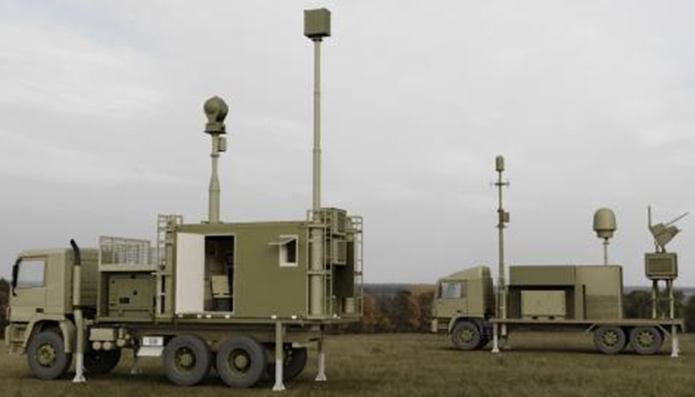
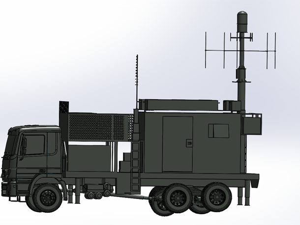
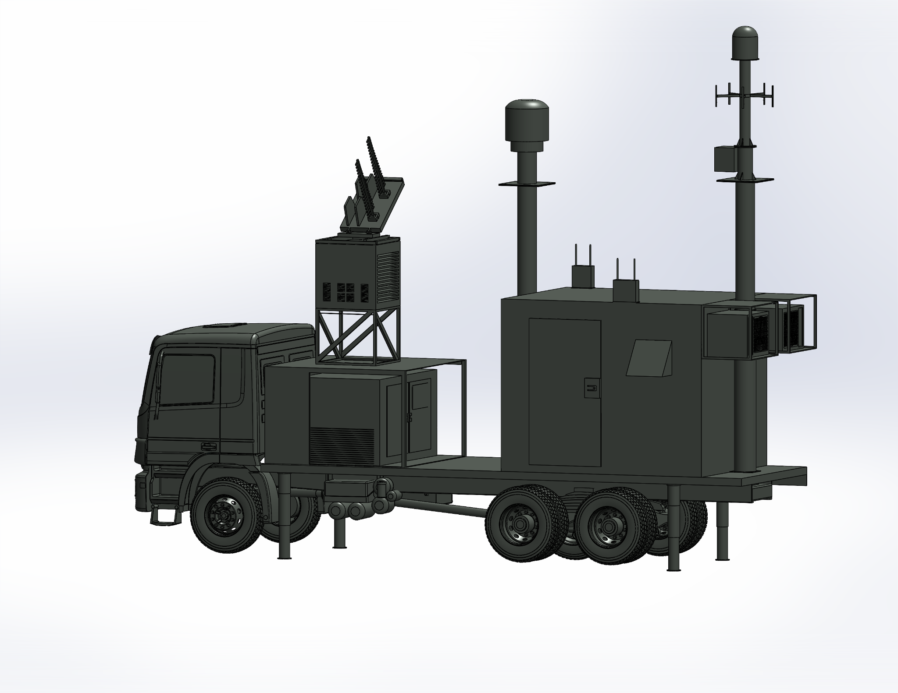
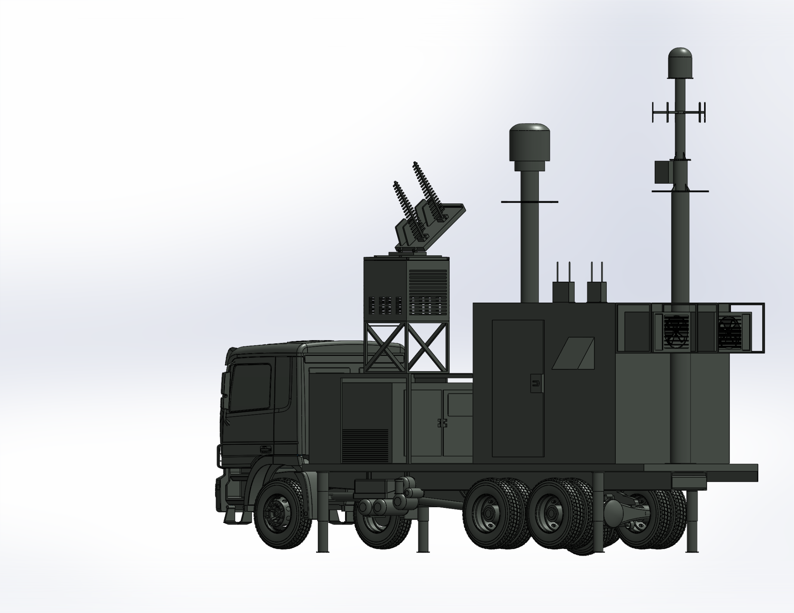

NASTP ALPHA 12 / THREE VEHICLE PLATFORMS
NASTP Alpha 12
Multi-Vehicle 3D Modeling
Developed detailed 3D CAD models for three different vehicle platforms under the NASTP Alpha 12 project. I personally created the assemblies and delivered the model files to NASTP for subsequent development, focusing on design accuracy, component integration and practical vehicle layouts.






Three-vehicle CAD modeling
Created the 3D designs and detailed vehicle assemblies using CAD tools, representing the overall vehicle forms and the arrangement of cabins, enclosures and associated components.
The work emphasized consistency between the reference vehicles and the digital assemblies, with attention to component integration and real-world feasibility as design objectives.
Delivered design files & project scope
The assignment was to provide the 3D models for NASTP's later vehicle development work. My deliverable was the completed CAD model files.
The field photograph is included as reference context. The CAD views show my modeling work, which strengthened my experience in complex assemblies and mechanical system design.